Overview
- 4198 submissões
- 198 grupos submeteram o seu projeto
- 100 grupos submeteram nas 24h antes da deadline
- 14 grupos submeteram pela primeira vez nas 24h antes da deadline
Evolução de Submissões
- Houve 7x mais submissões no último dia do que no primeiro
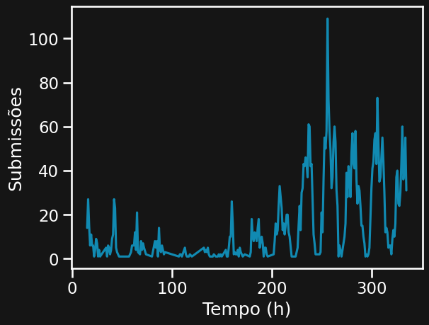
 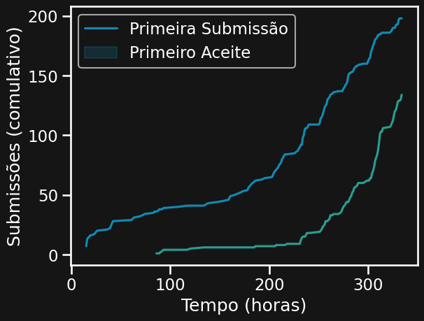
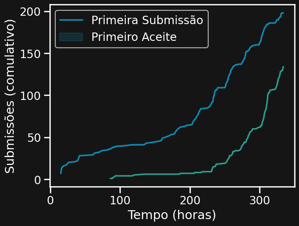
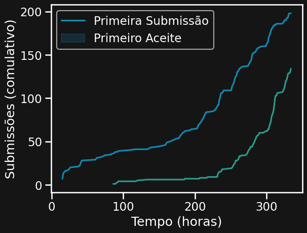
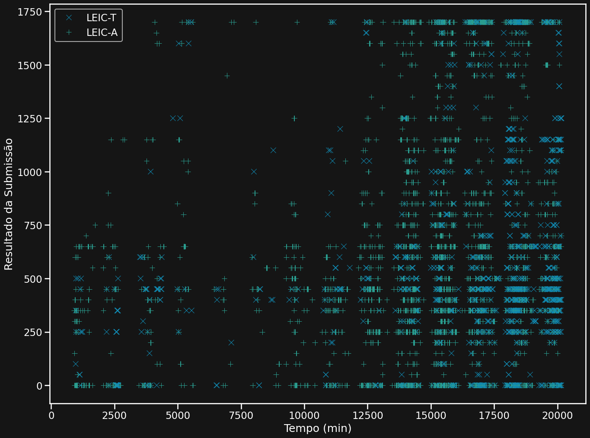
Múltiplas Submissões
- 12 grupos submeteram 16 vezes
- 1 grupo submeteu 177 vezes
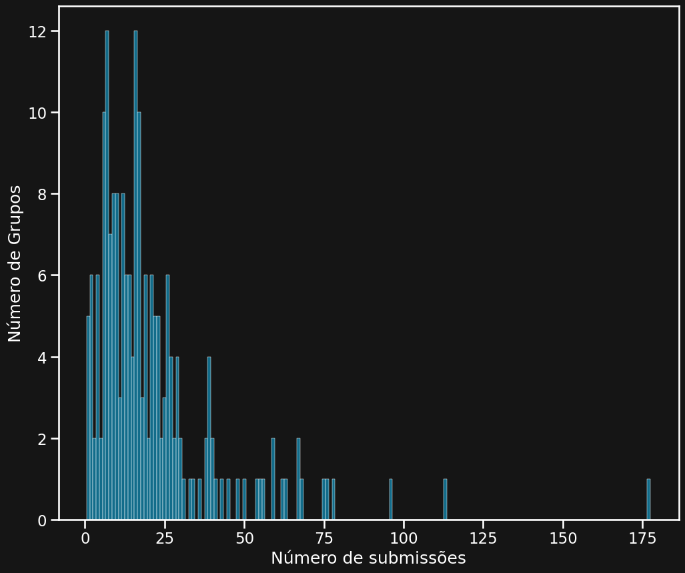
Resultado das Submissões
- Dos 198 grupos que submeteram, 134 tiveram pontuação máxima
- 2 grupos terminaram com 0
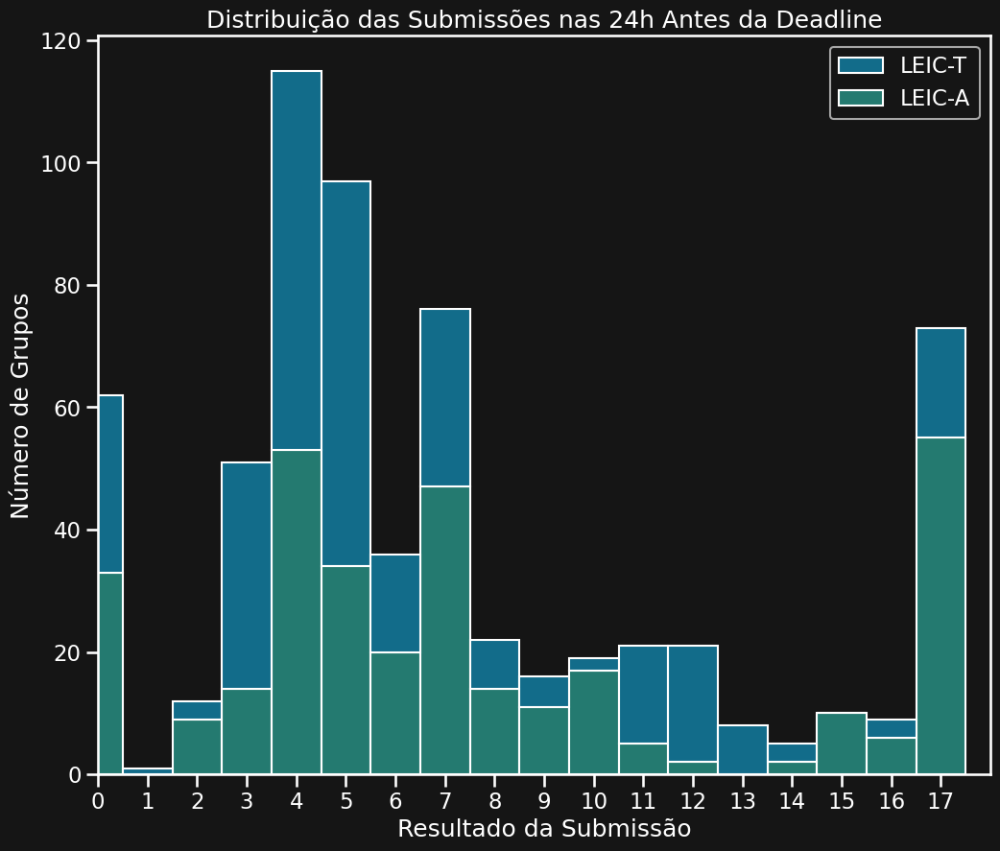
- A média do resultado final foi 1352 no geral, sendo 1481 em LEIC-A e 1120 em LEIC-T.
- A mediana do resultado final foi 1700 no geral, sendo 1700 em LEIC-A e 1250 em LEIC-T.
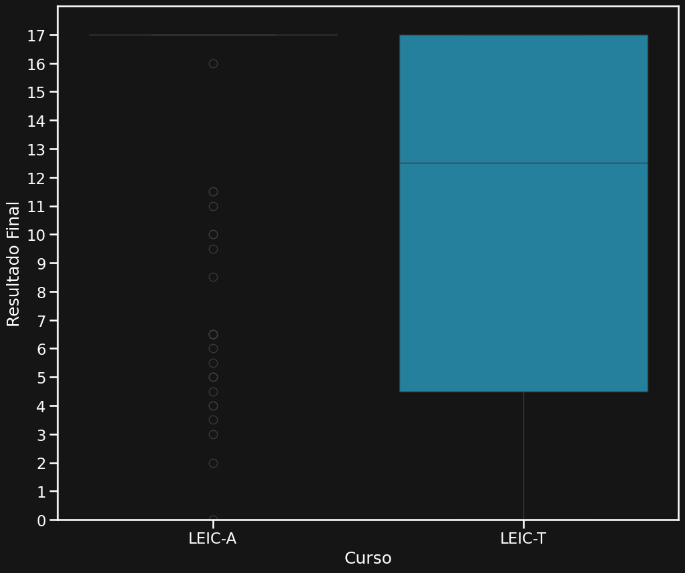
- Os 2 grupos que terminaram o projeto com 0 valores tiveram Compile Time Error e Runtime Error.
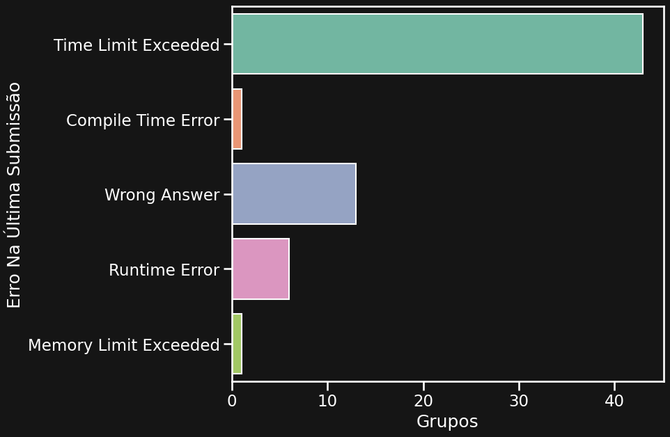
Last Day Heros
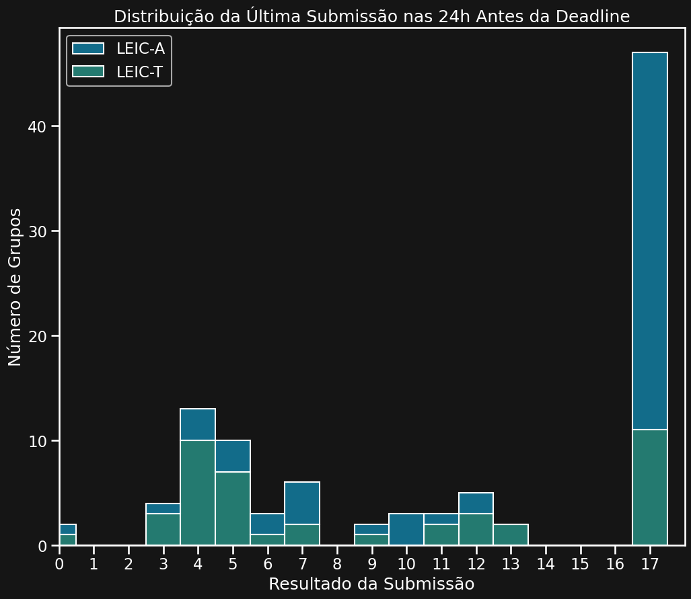
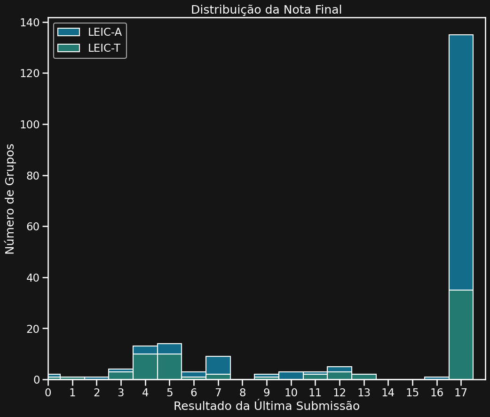